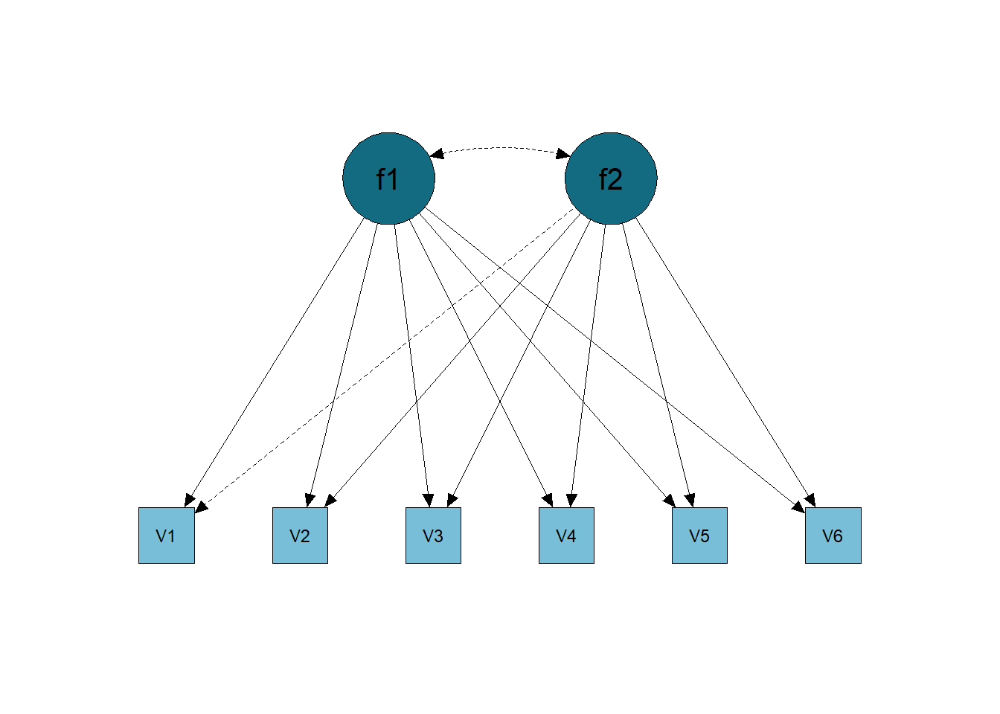
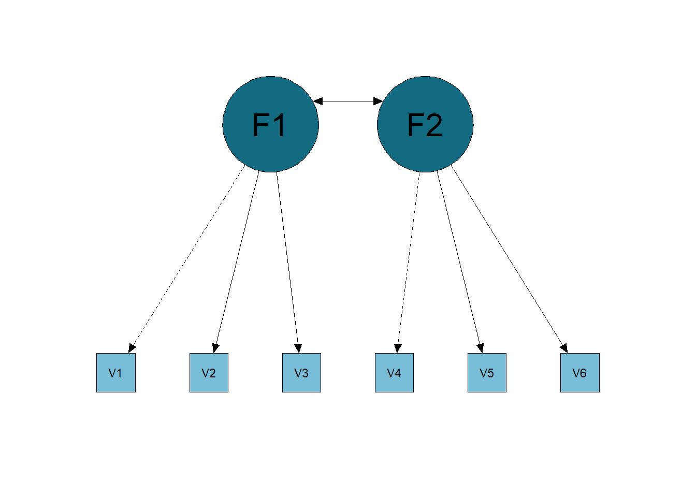

6 Confirmatory Factor Analysis
In this text, I will present the fundamentals of the Confirmatory Factor Analysis (CFA), and how it works, and we will compare CFA with Exploratory Factor Analysis.
6.1 What is it and When Do We Apply Confirmatory Factor Analysis?
The CFA is a multivariate statistic that serves to estimate the structure of an instrument, verifying how well the measured variables represent the number of constructs. That is, it verifies whether an instrument’s structure can be, but is not necessarily, true. For this, we need to state which structure we want to test. Generally, the CFA is used when there is a previous study that tells us the dimensionality of that instrument. For instance, we would have a North American study that uses an EFA to verify the instrument’s dimensionality and you use a CFA to verify how well this structure happens with Brazilian data. However, this is not the only way you can use the CFA! You can, for example, have the EFA in the same study (to explore the dimensionality), but still test different theoretical models using the CFA.
Thus, both EFA and CFA are applied when you want to estimate the dimensionality of an instrument (note that I said estimate, not explore/discover dimensionality). For example, we can apply the CFA in self-report instruments, where items represent behaviors, thoughts, or feelings. Another example, we can apply it to a set of other measures, such as psychophysical measures of anxiety. Thus, CFA applies to instruments that measure some attributes such as well-being, anxiety, prejudice, etc.
6.2 Model Specification
The model from a CFA is similar, but not equal to, the model from an EFA. The model can be described as:
\[ x = \Lambda_x \xi + \delta \]
\[ y = \Lambda_y \eta + \epsilon \]
Where \(x\) and \(y\) are observed variables, \(\xi\) and \(\eta\) are latent factors, and \(\delta\) and \(\epsilon\) are measurement errors. Both formulas yield the same basic model, where an observed variable depends on one or more latent variable and a measurement error. Remember that the measurement error is considered to be uncorrelated with the latent variables.
Imagine we have eight items (\(x1\) to \(x8\)), where the first four items’ measures extroversion, and the last four measures neuroticism. Let’s assume extroversion has no effects on the indicators of neuroticism. In addition, each indicator contains a measurement error that is assumed uncorrelated with the latent variables. The matrix equation the represents these relations are:
\[ \begin{bmatrix} x1 \\ x2 \\ x3 \\ x4 \\ x5 \\ x6 \\ x7 \\ x8 \end{bmatrix} = \begin{bmatrix} \lambda_{1,1} & 0 \\ \lambda_{2,1} & 0 \\ \lambda_{3,1} & 0 \\ \lambda_{4,1} & 0 \\ 0 & \lambda_{5,2} \\ 0 & \lambda_{6,2} \\ 0 & \lambda_{7,2} \\ 0 & \lambda_{8,2} \\ \end{bmatrix} \begin{bmatrix} \eta_1 \\ \eta_2 \end{bmatrix}+ \begin{bmatrix} \delta_1 \\ \delta_2 \\ \delta_3 \\ \delta_4 \\ \delta_5 \\ \delta_6 \\ \delta_7 \\ \delta_8 \end{bmatrix} \]
\[ COV(\eta_i,\delta_j) = 0 \] for all \(i\) and \(j\)
\[ E(\delta_j) = 0 \] for all \(j\).
We can think \(\eta_1\) as an extroversion latent variable and \(\eta_2\) as a neuroticism latent variable, where the first column of \(\lambda\)’s are factor loadings (the direct structural relation between a latent and observed variable; may be viewed as regression coefficients) for extroversion, and the second column are factor loadings for neuroticism. The double subscript of \(\lambda_{i,j}\) represent the row (item) and column (latent variable) positions. A zero in \(\lambda\) represent that the corresponding observed variable is not influenced by the latent variable in that column.
6.3 Differences Between Saturated/Unrestricted Model and Restricted Model
The EFA model can be called the saturated/unrestricted model. This is because all latent dimensions explain the variation in all items, as exemplified in the image below (Figure 6.1).
As for the CFA, we can call it the Restricted Model, that is, we impose some restrictions on the model, for example, not having cross-loadings of a factor with items from another factor. The restricted model is exemplified in the image below (Figure 6.2).

Of course, there are some practical differences between one model and another. The first is that, generally, the output of the factor loadings from a CFA is different from the EFA. While in EFA we have cross loads on all factors, in the CFA some loadings are set at 0 (Table 6.1).
| Items | Factor 1 | Factor 2 |
|---|---|---|
| V1 | 0.6 | 0.0 |
| V2 | 0.7 | 0.0 |
| V3 | 0.8 | 0.0 |
| V4 | 0.0 | 0.8 |
| V5 | 0.0 | 0.5 |
| V6 | 0.0 | 0.9 |
I made Table 6.2 that shows the differences between the unrestricted model (EFA) and the restricted model (CFA).
| EFA | CFA | |
|---|---|---|
| Explore data dimensionality | Yes | No |
| Require defined hypothesis | No | Yes |
| Choose items | Yes | No |
| Test Models | Yes | Yes |
| Prove models | No | No |
| Fit Indices Available | Yes | Yes |
| Restricted Model | No | Yes |
| Unrestricted/Saturated Model | Yes | No |
| Modifications/Residual Correlations | No | Yes |
We see in the table above that, for the confirmatory factor analysis, we need to have a defined hypothesis, that is, there must be a theory behind that will directly guide our analyses, we cannot just keep exploring without a proper justification. This is a little different from EFA, which has a theory behind the structure, but you test whether this structure will be corroborated in the data (through parallel analysis and the like). Of course, in EFA we can extract the factors based on theory, which, in a way, would resemble CFA in terms of the hypothesis guiding the analysis directly.
It is also important to emphasize again that in the CFA we can test different models, being able to make modifications and allow residual correlations. We can even test more complex models, such as a hierarchical model or a bifactor model. In short, because CFA makes restrictions on the model, we have the possibility to test a multitude of things! One use of CFA is through multi-group CFA.
6.4 Model Identification
We have to deal with a “problem” called model identification when we talk about a restricted model (Bollen, 1989). In other words, we need our data to have enough “information” to be able to do the necessary statistics.
Imagine if we were to estimate a one-factor model with 4 items (for example, estimating depression with a 4-item questionnaire). We therefore estimate 4 factor loadings (one per item), 4 residues (one per item), that is, we have 8 “information” to be discovered/estimated. The information we actually have is the item scores (for example, people’s scores on items Item1, Item2, Item3, Item4) and the correlation between them. Count the cells of the correlation matrix between 4 items in Table 6.3.
| Item1 | Item2 | Item3 | Item4 | |
|---|---|---|---|---|
| Item1 | ||||
| Item2 | -0.05 | |||
| Item3 | -0.13 | 0.03 | ||
| Item4 | -0.04 | 0.04 | -0.04 |
Thus, we have 4 scores + 6 correlations = 10 pieces of information. In other words, with 4 items we can estimate the 8 pieces of factor loadings and residues since we have 10 pieces of information in our hands. Following this logic, it is easy to see that, in order to be able to identify the model, the minimum number of items is 3 items per latent factor. See, in a unifactorial model with 3 items, we will estimate 3 factor loadings + 3 residues = 6 necessary information. We have information for 3 items + 3 correlations = 6 information in our sleeve. So we will have 0 degrees of freedom (DF).
If DF < 0, the unidentified model (nothing will be estimated);
If DF = 0, the model is under-identified (only factor loadings will be arbitrarily estimated; no fit indexes will be generated);
If DF> 1, the overidentified model (everything can be estimated).
A model should only be interpreted if DF> 1, as this is the only way to solve the covariance equation of items and latent variables, allowing the output of fit indices.
6.5 Fit Indices
The validity of psychometric models depends on the validity of the causal assumptions they make, which are generally implicit to the user. Psychological tests (e.g., self-report questionnaires) are typically constructed to measure constructs, while the responses observed in such tests are believed to reflect the underlying latent variable (Van Bork et al., 2017). For example, a person’s self-esteem is not observed directly, but we assume that it can be measured through the use of items from an instrument. Various fit indices have been created trying to figure out whether the data fits a specific model. However, the causal assumption regarding the relationship between constructs and their indicators is often ignored in commonly used fit indices (Bartholomew, 1995; Franco et al., 2023).
6.5.1 Fit Indices Commonly Used in Factor Analysis
To test whether the theoretical model reflects the data causally, several fit indices have been developed to try to achieve this. Two main classes of fit indices have been proposed to try to operationalize the “goodness” (or “badness”) of models (Xia & Yang, 2019): absolute fit indices and incremental fit indices.
Absolute fit indices assess how far the fitted model is from a “perfect” model, while a “perfect” model is defined as the model that can perfectly predict the values of the observed correlation matrix. One of the most used absolute fit indices is the Root Mean Squared Error of Approximation (RMSEA; Steiger & Lind, 1980; Franco et al., 2023). Incremental fit indices, on the other hand, evaluate the performance of the fitted model compared to a “baseline” model. The base model, in this context, is normally defined as the model where all variables are considered independent and, therefore, should be the model with the worst possible fit. The Comparative Fit Index (CFI; Bentler, 1990) and the Tucker-Lewis Index (TLI; Tucker & Lewis, 1973) are two of the most commonly used incremental fit indices. Regardless of whether a fit index is incremental or absolute, the “quality” of the fit is defined according to the objective function of the factor model, which is usually defined in terms of some type of difference between the observed correlation matrix and the implied correlation matrix from the adjusted model (Franco et al., 2023).
The main objective of factor analysis is to find a structure of latent causes that can be used to explain the correlational structure of observed data. Fit indices are, then, a way of checking whether the identified model is, in fact, good enough to explain the data. For a researcher to tell whether a model is “good enough” to explain the correlation structure of a data set, decisions based on fit indices depend on a set of cutoff criteria (Bentler & Bonett, 1980; Jöreskog & Sörbom, 1993). For example, Hu and Bentler (1999) demonstrated, through simulation studies, that an RMSEA less than 0.06 and a CFI and TLI greater than 0.95 indicate a relatively good fit of the model data to observed continuous variables. With nominal and ordinal data, however, these fit indices tend to be biased in the direction of good fit. Therefore, with nominal and ordinal data, more rigorous criteria or another decision criterion must be used for model selection (Xia & Yang, 2019).
For example, the article by Bonifay and Cai (2017) verified how the fit indexes of some models behaved. For this, a quasi-unrestricted model was tested (similar to the Exploratory Factor Analysis model, but with 2 loads being restricted to identify the model); a bifactor model; two hierarchical models; and a one-dimensional model. For this, fit indices were analyzed in 1000 simulated datasets. They found that, within all possible fits in these databases, the quasi-unconstrained model and the bifactor model almost always present good fit indices. This implies that we cannot interpret fit indices as good model indicators in these cases. For example, if you compare a bifactor model with a single-factor model, you will most likely find better fit indices in the bifactor, but this is not necessarily the best model to explain the data. Of course, one would have to compare fit indices of nested models, but the example serves as an illustration.
6.5.2 Criticisms of Factor Analysis
Some authors are critical of factorial models due to the lack of testing of causal assumptions, as shown by the network literature as an alternative way of explaining/describing the correlation patterns found between observed variables (Epskamp et al., 2018; Schmittmann et al., 2013). For example, McFarland’s work (McFarland, 2020) states that psychometric networks of Gaussian graphical models and latent variable modeling (Kline, 2023) are alternatives to each other, where both can be applied to describe or explain the variance-covariance structure of the observed variables of interest. . In fact, some simulation (e.g., van Bork et al., 2021) and theoretical (e.g., Kruis & Maris, 2016) studies have shown that network and factor analytic models can sometimes explain the same patterns of correlation. This highlights a limitation of fit indices such as RMSEA, CFI and TLI for assessing the “quality” of factor models: they do not necessarily consider the causal assumptions embedded in factor models.
Regardless, both absolute and incremental fit indices have been used to assess whether we have support for a factor or network model, models that have different causal assumptions (Kan et al., 2020; McFarland, 2020; see also Aristodemou et al., 2023). Therefore, a fit index that takes into account the causal structure assumed by factor models could, in principle, provide additional information necessary to perform a more appropriate model selection.
6.6 How to Run a Confirmatory Factor Analysis in R.
To run a Confirmatory Factor Analysis, we must first install the lavaan (Rosseel, 2012) package.
And tell the program that we are going to use the functions from this package.
Then, we must have information on which model we should test. In other words, we have to know the theory behind some instrument: how many factors we have, which items represent which factors, whether or not the factors are correlated, etc.
Let’s use the Holzinger and Swineford (1939) model as an example. We will save the model in the HS.model variable.
You can see in this code that =~ is used when we have a latent variable (on the left), and we inform after =~ which items belong to that factor (summing the items). By default, lavaan will correlate the factors. Let’s leave it like that for now. Now we will run the analysis and save in the object cfa.fit.
cfa.fit <- cfa(model = HS.model,
data = HolzingerSwineford1939,
estimator = 'ml',
ordered = FALSE
)
summary(cfa.fit,
fit.measures=TRUE,
standardized=TRUE
)lavaan 0.6.17 ended normally after 35 iterations
Estimator ML
Optimization method NLMINB
Number of model parameters 21
Number of observations 301
Model Test User Model:
Test statistic 85.306
Degrees of freedom 24
P-value (Chi-square) 0.000
Model Test Baseline Model:
Test statistic 918.852
Degrees of freedom 36
P-value 0.000
User Model versus Baseline Model:
Comparative Fit Index (CFI) 0.931
Tucker-Lewis Index (TLI) 0.896
Loglikelihood and Information Criteria:
Loglikelihood user model (H0) -3737.745
Loglikelihood unrestricted model (H1) -3695.092
Akaike (AIC) 7517.490
Bayesian (BIC) 7595.339
Sample-size adjusted Bayesian (SABIC) 7528.739
Root Mean Square Error of Approximation:
RMSEA 0.092
90 Percent confidence interval - lower 0.071
90 Percent confidence interval - upper 0.114
P-value H_0: RMSEA <= 0.050 0.001
P-value H_0: RMSEA >= 0.080 0.840
Standardized Root Mean Square Residual:
SRMR 0.065
Parameter Estimates:
Standard errors Standard
Information Expected
Information saturated (h1) model Structured
Latent Variables:
Estimate Std.Err z-value P(>|z|) Std.lv Std.all
visual =~
x1 1.000 0.900 0.772
x2 0.554 0.100 5.554 0.000 0.498 0.424
x3 0.729 0.109 6.685 0.000 0.656 0.581
textual =~
x4 1.000 0.990 0.852
x5 1.113 0.065 17.014 0.000 1.102 0.855
x6 0.926 0.055 16.703 0.000 0.917 0.838
speed =~
x7 1.000 0.619 0.570
x8 1.180 0.165 7.152 0.000 0.731 0.723
x9 1.082 0.151 7.155 0.000 0.670 0.665
Covariances:
Estimate Std.Err z-value P(>|z|) Std.lv Std.all
visual ~~
textual 0.408 0.074 5.552 0.000 0.459 0.459
speed 0.262 0.056 4.660 0.000 0.471 0.471
textual ~~
speed 0.173 0.049 3.518 0.000 0.283 0.283
Variances:
Estimate Std.Err z-value P(>|z|) Std.lv Std.all
.x1 0.549 0.114 4.833 0.000 0.549 0.404
.x2 1.134 0.102 11.146 0.000 1.134 0.821
.x3 0.844 0.091 9.317 0.000 0.844 0.662
.x4 0.371 0.048 7.779 0.000 0.371 0.275
.x5 0.446 0.058 7.642 0.000 0.446 0.269
.x6 0.356 0.043 8.277 0.000 0.356 0.298
.x7 0.799 0.081 9.823 0.000 0.799 0.676
.x8 0.488 0.074 6.573 0.000 0.488 0.477
.x9 0.566 0.071 8.003 0.000 0.566 0.558
visual 0.809 0.145 5.564 0.000 1.000 1.000
textual 0.979 0.112 8.737 0.000 1.000 1.000
speed 0.384 0.086 4.451 0.000 1.000 1.000The first argument you have to put the variable where you configured the model. The data argument must come with your database. As the data follows a normal distribution and is continuous, we will consider the Maximum Likelihood estimator and the items will not be considered as ordinal.
Now, let’s analyze the result with the following function, where we ask for the fit indices, standardized loads and correlations.
The “Model Test User Model” represents the chi-square of the configured model. We also have several other adjustment indices, such as CFI, TLI, RMSEA and SRMR. We report fit indices as follows.
The Holzier and Swineford (1939) model had the following fit indices: 𝜒²(gl = 24) = 85,306, p < 0,001, CFI = 0,931, TLI = 0,896, RMSEA [IC 95%]= 0,092 [0,071 - 0,0114], SRMR = 0,065.
The standardized factor loadings are in the “Latent Variables” part in the “Std.all” column. The p-values of each item are in the “P(>|z|)” column. We see that we do not have the loading of the first item of each factor. This is because we have to fix one of the loads to have the magnitude of the others as a parameter, and lavaan always fixes the first one by default (look at the Estimate column, which represents the non-standardized load). We can set other items and leave the first one to be estimated, just put NA* in front of the first item and set another item at 1*. That way:
HS.model <- ' visual =~ NA*x1 + 1*x2 + x3
textual =~ NA*x4 + x5 + 1*x6
speed =~ NA*x7 + x8 + 1*x9 '
cfa.fit <- cfa(model = HS.model,
data = HolzingerSwineford1939,
estimator = 'ml',
ordered = FALSE)
summary(cfa.fit,
fit.measures=TRUE,
standardized=TRUE)lavaan 0.6.17 ended normally after 40 iterations
Estimator ML
Optimization method NLMINB
Number of model parameters 21
Number of observations 301
Model Test User Model:
Test statistic 85.306
Degrees of freedom 24
P-value (Chi-square) 0.000
Model Test Baseline Model:
Test statistic 918.852
Degrees of freedom 36
P-value 0.000
User Model versus Baseline Model:
Comparative Fit Index (CFI) 0.931
Tucker-Lewis Index (TLI) 0.896
Loglikelihood and Information Criteria:
Loglikelihood user model (H0) -3737.745
Loglikelihood unrestricted model (H1) -3695.092
Akaike (AIC) 7517.490
Bayesian (BIC) 7595.339
Sample-size adjusted Bayesian (SABIC) 7528.739
Root Mean Square Error of Approximation:
RMSEA 0.092
90 Percent confidence interval - lower 0.071
90 Percent confidence interval - upper 0.114
P-value H_0: RMSEA <= 0.050 0.001
P-value H_0: RMSEA >= 0.080 0.840
Standardized Root Mean Square Residual:
SRMR 0.065
Parameter Estimates:
Standard errors Standard
Information Expected
Information saturated (h1) model Structured
Latent Variables:
Estimate Std.Err z-value P(>|z|) Std.lv Std.all
visual =~
x1 1.807 0.325 5.554 0.000 0.900 0.772
x2 1.000 0.498 0.424
x3 1.318 0.239 5.509 0.000 0.656 0.581
textual =~
x4 1.080 0.065 16.703 0.000 0.990 0.852
x5 1.202 0.072 16.760 0.000 1.102 0.855
x6 1.000 0.917 0.838
speed =~
x7 0.925 0.129 7.155 0.000 0.619 0.570
x8 1.091 0.145 7.517 0.000 0.731 0.723
x9 1.000 0.670 0.665
Covariances:
Estimate Std.Err z-value P(>|z|) Std.lv Std.all
visual ~~
textual 0.209 0.048 4.322 0.000 0.459 0.459
speed 0.157 0.040 3.967 0.000 0.471 0.471
textual ~~
speed 0.174 0.048 3.592 0.000 0.283 0.283
Variances:
Estimate Std.Err z-value P(>|z|) Std.lv Std.all
.x1 0.549 0.114 4.833 0.000 0.549 0.404
.x2 1.134 0.102 11.146 0.000 1.134 0.821
.x3 0.844 0.091 9.317 0.000 0.844 0.662
.x4 0.371 0.048 7.779 0.000 0.371 0.275
.x5 0.446 0.058 7.642 0.000 0.446 0.269
.x6 0.356 0.043 8.277 0.000 0.356 0.298
.x7 0.799 0.081 9.823 0.000 0.799 0.676
.x8 0.488 0.074 6.573 0.000 0.488 0.477
.x9 0.566 0.071 8.003 0.000 0.566 0.558
visual 0.248 0.077 3.214 0.001 1.000 1.000
textual 0.840 0.098 8.541 0.000 1.000 1.000
speed 0.449 0.087 5.152 0.000 1.000 1.000See that now items x2, x6 and x9 are fixed with a charge equal to 1.
Well, we see the covariances below, in the “Covariances” part. The standardized column for the covariance (the correlation) between the factors is also “Std.all”. We see that visual was correlated with textual (r = 0.459), visual with speed (r = 0.471), and textual with speed (r = 0.283), with all correlations being significant (column “P(>|z|) )”.
What if in our model we theorize that there is no correlation between factors? We have a few more things to add to the code. See in the previous output that the correlation is expressed by ~~. Also, remember that to set a parameter to some number, we multiply with * in the model.
Then, the code with all orthogonal (i.e., uncorrelated) factors.
HS.model <- ' visual =~ x1 + x2 + x3
textual =~ x4 + x5 + x6
speed =~ x7 + x8 + x9
visual ~~ 0*textual
visual ~~ 0*speed
textual ~~ 0*speed
'
cfa.fit <- cfa(model = HS.model,
data = HolzingerSwineford1939,
estimator = 'ml',
ordered = FALSE
)
summary(cfa.fit,
fit.measures=TRUE,
standardized=TRUE
)lavaan 0.6.17 ended normally after 32 iterations
Estimator ML
Optimization method NLMINB
Number of model parameters 18
Number of observations 301
Model Test User Model:
Test statistic 153.527
Degrees of freedom 27
P-value (Chi-square) 0.000
Model Test Baseline Model:
Test statistic 918.852
Degrees of freedom 36
P-value 0.000
User Model versus Baseline Model:
Comparative Fit Index (CFI) 0.857
Tucker-Lewis Index (TLI) 0.809
Loglikelihood and Information Criteria:
Loglikelihood user model (H0) -3771.856
Loglikelihood unrestricted model (H1) -3695.092
Akaike (AIC) 7579.711
Bayesian (BIC) 7646.439
Sample-size adjusted Bayesian (SABIC) 7589.354
Root Mean Square Error of Approximation:
RMSEA 0.125
90 Percent confidence interval - lower 0.106
90 Percent confidence interval - upper 0.144
P-value H_0: RMSEA <= 0.050 0.000
P-value H_0: RMSEA >= 0.080 1.000
Standardized Root Mean Square Residual:
SRMR 0.161
Parameter Estimates:
Standard errors Standard
Information Expected
Information saturated (h1) model Structured
Latent Variables:
Estimate Std.Err z-value P(>|z|) Std.lv Std.all
visual =~
x1 1.000 0.724 0.621
x2 0.778 0.141 5.532 0.000 0.563 0.479
x3 1.107 0.214 5.173 0.000 0.801 0.710
textual =~
x4 1.000 0.984 0.847
x5 1.133 0.067 16.906 0.000 1.115 0.866
x6 0.924 0.056 16.391 0.000 0.910 0.832
speed =~
x7 1.000 0.661 0.608
x8 1.225 0.190 6.460 0.000 0.810 0.801
x9 0.854 0.121 7.046 0.000 0.565 0.561
Covariances:
Estimate Std.Err z-value P(>|z|) Std.lv Std.all
visual ~~
textual 0.000 0.000 0.000
speed 0.000 0.000 0.000
textual ~~
speed 0.000 0.000 0.000
Variances:
Estimate Std.Err z-value P(>|z|) Std.lv Std.all
.x1 0.835 0.118 7.064 0.000 0.835 0.614
.x2 1.065 0.105 10.177 0.000 1.065 0.771
.x3 0.633 0.129 4.899 0.000 0.633 0.496
.x4 0.382 0.049 7.805 0.000 0.382 0.283
.x5 0.416 0.059 7.038 0.000 0.416 0.251
.x6 0.369 0.044 8.367 0.000 0.369 0.308
.x7 0.746 0.086 8.650 0.000 0.746 0.631
.x8 0.366 0.097 3.794 0.000 0.366 0.358
.x9 0.696 0.072 9.640 0.000 0.696 0.686
visual 0.524 0.130 4.021 0.000 1.000 1.000
textual 0.969 0.112 8.640 0.000 1.000 1.000
speed 0.437 0.097 4.520 0.000 1.000 1.000See that all correlations are set to 0. You can set any value for any parameter, but remember to have a theory behind it to support it.
Of course, we can also do the analysis for ordinal data. Generally, for ordinal data we use another estimator, "WLSMV", and put the argument ordered = TRUE. It would look like this (but will not work on this data, since the data is not ordinal):
cfa.fit <- cfa(model = HS.model,
data = HolzingerSwineford1939,
estimator = 'WLSMV',
ordered = TRUE
)We can calculate from people’s factor scores. Factor scores work like when you calculate the average of an instrument to correlate with others, but calculating averages has certain assumptions, while factor scores have others. So, to calculate the factor scores just use the following code.
We see that in the variable data_with_scores the factor scores of each subject were calculated and these scores were added to their database.
6.7 References
Aristodemou, M. E., Kievit, R. A., Murray, A. L., Eisner, M., Ribeaud, D., & Fried, E. I. (2023). Common Cause Versus Dynamic Mutualism: An Empirical Comparison of Two Theories of Psychopathology in Two Large Longitudinal Cohorts. Clinical Psychological Science, 21677026231162814. https://doi.org/10.1177/21677026231162814
Bartholomew, D. J. (1995). Spearman and the origin and development of factor analysis. British Journal of Mathematical and Statistical Psychology, 48(2), 211-220. https://doi.org/10.1111/j.2044-8317.1995.tb01060.x
Bentler, P. M. (1990). Comparative fit indexes in structural models. Psychological Bulletin, 107, 238–246. https://doi.org/10.1037/0033-2909.107.2.238
Bentler, P.M.,& Bonett, D. G. (1980). Significance tests and goodness of fit in the analysis of covariance structures. Psychological Bulletin, 88, 588–606. https://doi.org/10.1037/0033-2909.88.3.588
Bollen, K. A. (1989). Structural equations with latent variables. John Wiley & Sons.
Bonifay, W., & Cai, L. (2017). On the complexity of item response theory models. Multivariate behavioral research, 52(4), 465-484. https://doi.org/10.1080/00273171.2017.1309262
Borsboom, D., & Cramer, A. O. (2013). Network analysis: an integrative approach to the structure of psychopathology. Annual review of clinical psychology, 9, 91-121. https://doi.org/10.1146/annurev-clinpsy-050212-185608
Epskamp, S., Maris, G., Waldorp, L. J., & Borsboom, D. (2018). Network psychometrics. The Wiley handbook of psychometric testing: A multidisciplinary reference on survey, scale and test development, 953-986. https://doi.org/10.1002/9781118489772.ch30
Franco, V. R., Bastos, R. V., & Jiménez, M. (2023, June). Tetrad Fit Index for Factor Analysis Models. Paper presented at Virtual MathPsych/ICCM 2023. Via mathpsych.org/presentation/1297.
Holzinger, K. J., & Swineford, F. (1939). A study in factor analysis: The stability of a bi-factor solution. Supplementary educational monographs.
Hu, L., & Bentler, P. M. (1999). Cutoff criteria for fit indexes in covariance structure analysis: Conventional criteria versus new alternatives. Structural Equation Modeling, 6, 1–55. https://doi.org/10.1080/10705519909540118
Kan, K. J., de Jonge, H., van der Maas, H. L., Levine, S. Z., & Epskamp, S. (2020). How to compare psychometric factor and network models. Journal of Intelligence, 8(4), 35. https://doi.org/10.3390/jintelligence8040035
Kline, R. B. (2023). Principles and practice of structural equation modeling. Guilford publications.
Kruis, J., & Maris, G. (2016). Three representations of the Ising model. Scientific reports, 6(1), 34175. https://doi.org/10.1038/srep34175
McFarland, D. (2020). The effects of using partial or uncorrected correlation matrices when comparing network and latent variable models. Journal of Intelligence, 8(1), 7. https://doi.org/10.3390/jintelligence8010007
R Core Team (2023). R: A Language and Environment for Statistical Computing. R Foundation for Statistical Computing, Vienna, Austria. https://www.R-project.org/.
Rosseel, Y. (2012). lavaan: An R Package for Structural Equation Modeling. Journal of Statistical Software, 48(2), 1-36. https://doi.org/10.18637/jss.v048.i02
Schmittmann, V. D., Cramer, A. O., Waldorp, L. J., Epskamp, S., Kievit, R. A., & Borsboom, D. (2013). Deconstructing the construct: A network perspective on psychological phenomena. New ideas in psychology, 31(1), 43-53. https://doi.org/10.1016/j.newideapsych.2011.02.007
Steiger, J. H.,&Lind, J. C. (1980). Statistically based tests for the number of common factors. Paper presented at the Annual Meeting of the Psychometric Society, Iowa City, IA.
Tucker, L. R., & Lewis, C. (1973). A reliability coefficient for maximum likelihood factor analysis. Psychometrika, 38, 1–10. https://doi.org/10.1007/BF02291170
Van Bork, R., Wijsen, L. D., & Rhemtulla, M. (2017). Toward a causal interpretation of the common factor model. Disputatio, 9(47), 581-601. https://doi.org/10.1515/disp-2017-0019
Xia, Y., & Yang, Y. (2019). RMSEA, CFI, and TLI in structural equation modeling with ordered categorical data: The story they tell depends on the estimation methods. Behavior Research Methods, 51, 409-428. https://doi.org/10.3758/s13428-018-1055-2